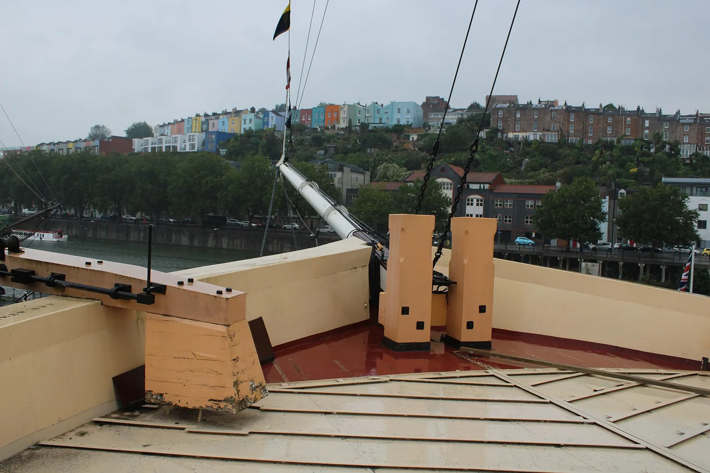

Ruta 01
Puerto, ingeniería y Clifton
La ruta más equilibrada: cuenta la relación de Bristol con el agua sin ocultar su historia comercial y reserva un día completo para la garganta del Avon.

Casco antiguo y puerto
Bristol Cathedral y College Green · 60 min
La nave de altura uniforme y el coro medieval introducen una ciudad con mucha más profundidad histórica que sus muelles industriales. El viernes la visita turística suele ser 10:00–16:00; si llegáis después, contemplad el exterior y regresad el lunes. Entrada gratuita, donación sugerida £5.
Harbourside, Pero’s Bridge y Queen Square · 2 h
Las grúas, almacenes y canales explican cómo el puerto flotante reorganizó la economía local. Pero’s Bridge recuerda a Pero Jones, esclavizado por el comerciante John Pinney, y abre una conversación necesaria sobre la riqueza atlántica de Bristol. Todo es exterior y gratuito.
Un barco que cambió los viajes
Brunel’s SS Great Britain · 3 h
Casco de hierro, hélice y travesías oceánicas convierten el barco en una historia tangible de ingeniería, migración y vida a bordo. Se puede recorrer desde la maquinaria hasta las cubiertas y comparar clases de pasaje, por lo que la escala del buque se comprende físicamente. Abre 10:00–17:00; entrada presencial £25,00 · 29,16 €, online desde £22,00 · 25,66 €.
M Shed · 2 h 30 min
Objetos, testimonios y maquinaria narran Bristol desde sus barrios, protestas, transporte y comunidades, incluidas las partes incómodas de su historia portuaria. Complementa el barco con la perspectiva de quienes vivieron y trabajaron en la ciudad. Sábado 10:00–17:00; colección permanente gratuita. La exposición Aardman es independiente y puede estar agotada.
Wapping Wharf y Underfall Yard exterior · 90 min
El paseo sigue muelles, grúas y la infraestructura que controla el nivel del puerto antes de terminar entre antiguas naves reutilizadas para nuevos usos. Ayuda a ver el puerto como una máquina urbana todavía legible y no solo como paseo de ocio. Es exterior, gratuito y puede acortarse si llueve.
Brandon Hill, Clifton y el Avon
Brandon Hill y Cabot Tower · 2 h 15 min
El parque más antiguo de Bristol asciende desde el centro hasta una torre con visión de 360 grados sobre el puerto, Clifton y la expansión urbana. La subida permite ordenar geográficamente todo lo visto el sábado y recordar que la torre conmemora los viajes atlánticos de John Cabot, un relato que debe leerse junto a la historia comercial del puerto. Brandon Hill está siempre abierto; Cabot Tower abre a diario 08:00–20:15 en septiembre y ambos son gratuitos.
Clifton Village y Observatory exterior · 90 min
Las terrazas georgianas, las tiendas pequeñas y el borde de la garganta cambian completamente la escala respecto al puerto. El paseo permite ver cómo el relieve condicionó calles, viviendas y miradores antes de llegar al puente; es gratuito y el Observatory queda como extra, no como condición de la ruta.
Clifton Suspension Bridge y museo · 2 h
El puente de Brunel demuestra cómo una solución estructural puede convertirse en símbolo urbano y cómo la garganta obligó a combinar ingeniería con paisaje. Cruzarlo a pie permite apreciar tanto el tablero como los apoyos desde ambos lados; es gratuito y está abierto las 24 horas. El pequeño centro de visitantes abre 10:00–17:00, también gratis y sin reserva.
Mercado o aeropuerto
Desayuno, equipaje y aeropuerto.
09:30–11:30 St Nicholas Market, calle Corn y, si quedó pendiente, Bristol Cathedral. El mercado abre el lunes 09:30–17:00 y la catedral recibe visitas 10:00–16:00.